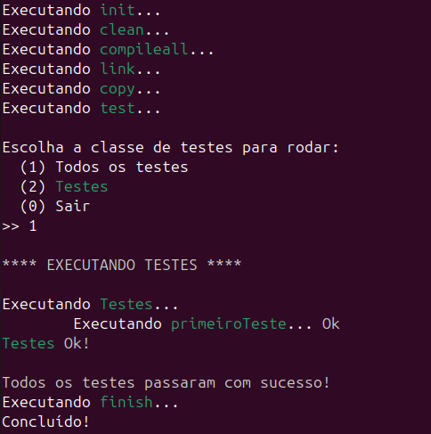

O foxmake pode ser utilizado para automatizar o processo de build de
projetos C/C++, permitindo configurar tarefas e executá-las para ter
como resultado final: um executável linkado, uma shared library, uma
static library, execução de testes unitários, etc.
Atenção:
Para o foxmake funcionar, é necessário que o g++ esteja
acessível no seu sistema operacional. Ou gcc, caso queira
compilar arquivos C, necessitando especificar que deseja
compilar com gcc, e não, g++.
Se estiver no windows, pode instalar o mingw64 através do
site:
https://www.mingw-w64.org/
Ou do repositório do mingw-build-binaries:
https://github.com/niXman/mingw-builds-binaries/releases
Escrevendo o FoxMakefile
O FoxMakefile é um arquivo de script e configurações. A interpretação
dele é case-sensitive. Logo, a palavra "task" é reconhecido e "TASK" não.
O FoxMakefile pode ter a seguinte estrutura inicial:
output.file.name=executavel.exe
A configuração acima assume que a pasta de código fonte é a raiz do
projeto e a pasta de binários também. Você pode definir as pastas como a seguir:
Para executar o foxmake, coloque o FoxMakefile na raiz do seu projeto
C/C++ e, então, execute o seguinte comando:
foxmake compile link
Nesse comando, são especificadas duas tarefas: compile e link. Logo, o código fonte da pasta
src é compilado e o executável linkado vai para pasta bin e para pasta build, caso
essas pastas tenham sido configuradas no FoxMakefile.
Você pode executar o foxmake com as seguintes opções:
--script=scriptfile: Onde scriptfile é o nome do arquivo de script que,
por padrão, é FoxMakefile.
--working-dir=dir: Onde dir é o diretório de trabalho base para as outras
pastas e arquivos. As pastas bin, src, etc. Se não absolutas, são relativas ao
diretório de trabalho que, por padrão é o diretório onde o arquivo de script foi
encontrado.
--verbose e -v: Uma dessas opções pode habilitar, se informada, uma
impressão detalhada de informações da execução das tarefas na saída padrão.
--no-resume: Essa opção pode desabilitar a impressão de um resumo da
execução das tarefas na saída padrão.
-prop name=value: Onde name é o nome da propriedade e value é o valor.
-var name=value: Onde name é o nome da variável e value é o valor.
A opção prop seta uma propriedade que poderia ser definida no arquivo de script (O FoxMakefile).
Veja mais alguns exemplos:
foxmake buildall -v
No exemplo acima, uma saída detalhada sobre a execução das tarefas
é impressa na saída padrão.
foxmake buildall --no-resume
No exemplo acima, nem são impressos detalhes da execução das tarefas
nem o resumo.
Comentários
Para criar comentários, basta iniciar a linha a ser comentada com #.
Para comentar várias linhas, basta iniciar o bloco de comentários com ##
e finalizar com ## conforme o exemplo a seguir:
# Comentário
##
Bloco de comentários
Aqui pode haver várias linhas
de comentário
##
Tarefas
O foxmake suporta as seguintes tarefas:
clean
compile
compileall
link
archive
test
copy
build
archivebuild
testbuild
buildall
archivebuildall
testbuildall
A tarefa clean
A tarefa clean exclui os arquivos criados na execução das tarefas de compile,
compileall, link, archive, copy.
A tarefa compile
A tarefa compile compila todos os arquivos de código fonte de implementação encontrados
na pasta correspondente a propriedade "src.dir" e na pasta correspondente a propriedade
"test.dir" (caso seja definida). O resultado da compilação é os arquivos objeto que são
colocados na pasta correspondente a propriedade "obj.dir".
A tarefa compileall
Semelhante a tarefa compile. Com a diferença de que sempre compila todos os arquivos
de implementação. A tarefa compile, compila de forma inteligente, levando em conta se o
arquivo foi alterado desde a última compilação para decidir se é necessário compilá-lo
novamente.
A tarefa link
A tarefa link executa a linkagem do código objeto, gerando um executável ou uma
biblioteca dinâmica (shared library - dll, so).
A tarefa archive
A tarefa archive pode ser utilizada para empacotar uma biblioteca estática
(static library).
A tarefa test
A tarefa test pode ser utilizada para executar testes unitários criados com
uso do framework xutest. Para tanto, é necessário configurar a pasta de testes
e a lib do xutest deve ser incluída no comando de linker.
A tarefa copy
Esta tarefa, quando executada, copia os arquivos resultantes da compilação, linkagem
e empacotamento para pasta de build.
Tarefas de build
As tarefas de build combinam a execução das tarefas conforme a seguir:
build: clean, compile, link, copy
archivebuild: clean, compile, archive, copy
testbuild: clean, compile, link, copy, test
buildall: clean, compileall, link, copy
archivebuildall: clean, compileall, archive, copy
testbuildall: clean, compileall, link, copy, test
Propriedades
As definições de propriedades são interpretadas em tempo de interpretação (com a interpretação
do script).
O foxmake tem as seguintes propriedades que podem ser definidas no
arquivo de script - FoxMakefile:
compiler
archiver
base.dir
src.dir
bin.dir
obj.dir
build.dir
test.dir
compiler.params
linker.params
archiver.params
include.dirs
lib.dirs
libs
defines
test.compiler.params
test.linker.params
test.include.dirs
test.lib.dirs
test.libs
test.defines
output.file.name
resource.file
output.def.file
out.implib.file
As propriedades: compiler, archiver especificam os programas
de linha de comando que serão utilizados para essas operações: Exemplo:
compiler=g++
archiver=ar
Os diretórios de arquivos podem ser organizados conforme o exemplo a seguir:
As propriedades: compiler.params, linker.params e archiver.params podem ser
utilizadas para passar parâmetros/opções extras aos comandos correspondentes.
Exemplo:
compiler.params=-Wall -g
linker.params=-s -static
Esse exemplo executa os seguintes comandos para a compilação e linkagem
de um simples arquivo main.cpp
Esse exemplo inclue no compilador a opção: -Iinclude, e ao linker as
opções: -Llib -lxutest -lSDL2
A propriedade defines pode ser utilizada para incluir definições ao compilador.
Como se estivessem sido definidas com #define. Exemplo:
defines=BUILDDLL
No exemplo acima, é incluída a seguinte opção ao compilador: -DBUILDDLL
As propriedades que se iniciam com teste são semelhantes as de mesmo nome que não
se iniciam com prefixo test. A diferença é que são aplicadas a compilação e linkagem do
executável de testes, não a compilação e linkagem do executável do projeto.
A propriedade output.file.name pode ser utilizada para configurar o nome do
arquivo de saída que pode ser um executável, uma shared library ou uma static library.
Exemplo:
output.file.name=executavel
A propriedade resource.file funciona no windows para que um arquivo de
ícone seja colocado no executável. Exemplo:
resource.file=icone.res
As propriedades output.def.file e out.implib.file podem ser definidas para
geração de shared libraries. Exemplo:
Com essa configuração, são adicionadas as seguintes linhas ao linker:
-Wl,--output-def=xutest.def -Wl,--out-implib=libxutest.a
Chamando propriedades
Para chamar uma propriedade, você pode usar a sintaxe: $(nomedapropriedade).
Exemplo:
echo $(src.dir)
O comando acima exibe o valor da propriedade "src.dir"
Utilizando $ como caractere
Se precisar utilizar o caractere $ como texto nas definições de
propriedades ou variáveis, é necessário utilizar \$. o contra barra
diz ao interpretador que o \$ é um caractere e não o início da chamada
de uma variável ou propriedade. Exemplo:
linker.options=\$(sdl2-config --cflags --libs)
O exemplo acima funciona no linux e executa "sdl2-config --cflags --libs"
no shell do linux durante a execução da linkagem.
Variáveis
É possível também definir variáveis tipo texto e usá-las em comandos,
valores de propriedades, etc.
Variáveis devem ser sempre definidas iniciando com um $ e chamadas
com $(nomedavariavel).
Variáveis são interpretadas em tempo de interpretação (com a interpretação
do script) se estiverem definidas fora de algum bloco de definição de task ou
procedure. Caso contrário, se estiver no bloco de alguma definição de task ou
procedure, é executada em tempo de execução, com a execução do bloco.
O foxmake carrega algumas variáveis predefinidas antes do script ser
interpretado. São elas:
working_dir: Assume o valor do diretório de trabalho.
script_file: Assume o valor do caminho do script carregado.
os: Assume um valor correspondente ao sistema operacional.
Isto é, se é windows ou não.
A variável "os" pode assumir dois valores: "windows" ou "nowindows".
Vamos a um exemplo:
$release_dir=Release
bin.dir=bin/$(release_dir)
No exemplo acima, "$(release_dir)" é substituído por "Release" e "bin.dir"
passa a valer: "bin/Release". Vamos a outro exemplo:
No exemplo acima, $(target) é substituído por "release" e "bin.dir" passa
a valer "bin/Release". Se substituir o valor da variável $target por "debug",
sem aspas, "bin.dir" passa a valer "bin/Debug"
Agora veja outro exemplo utilizando variáveis predefinidas:
echo $working_dir
echo $script_file
echo $os
O exemplo acima imprime os valores das variáveis predefinidas.
Atenção: Não é permitido alterar valor de variáveis predefinidas.
Logo, é inválido fazer conforme a seguir:
$os=linux
Definição de blocos de tarefa default
É possível configurar no script um bloco de código que pode ser executado
antes ou depois da execução de uma tarefa. Exemplo:
task compile before
echo Iniciando compilação...
endtask
task compile after
echo Finalizando compilação...
endtask
Nesse exemplo, antes da task compile ser executada, é impressa na saída
padrão a mensagem "Iniciando compilação..." e, depois da tarefa ser executada,
é impressa a mensagem "Finalizando compilação...".
Executando antes ou após tudo
É possível definir as tarefas init e finish para executar o bloco
de código no início ou no final do processo de build. Exemplo:
task init before
echo Executando isto antes de tudo...
endtask
task finish after
echo Executando isto após tudo...
endtask
Tarefas de usuário
Você pode definir sua própria tarefa como no exemplo a seguir:
Para executar a task acima, basta executar o seguinte comando:
foxmake minhatask
Ela também pode ser combinada com as demais tasks, exemplo:
foxmake compile minhatask
Configuração de tarefas
Você pode configurar tarefas especificando as flags na definição de
sua configuração.
São suportadas as seguintes flags
verbose
noverbose
showoutput
noshowoutput
A definição de configuração de tarefa deve finalizar com ponto e
virgula e apenas tarefas default podem ser configuradas assim.
Veja os exemplos abaixo:
task compile verbose;
No exemplo acima é definido que todos os detalhes da task compile devem
ser impressos na saída padrão independente do foxmake está configurado como não
verbose.
task compile noverbose;
No exemplo acima é definido que os detalhes da task compile não devem
ser impressos na saída padrão independente do foxmake está configurado como
verbose.
task compile showoutput;
No exemplo acima define que a saída dos comandos da tarefa compile
deve ser mostrada na saída padrão.
task compile noshowoutput;
No exemplo acima define que a saída dos comandos da tarefa compile
não deve ser mostrada na saída padrão.
Você pode combinar flags como no exemplo abaixo:
task compile verbose noshowoutput;
Procedimentos
Para criar um procedimento, utilize a palavras reservadas "proc" e "endproc".
Para chamar o procedimento, utilize "call". Veja o exemplo abaixo:
proc imprimeMensagemDeCompile
echo A compilação está sendo executada...
endproc
task compile before
call imprimeMensagemDeCompile
endtask
task compileall before
call imprimeMensagemDeCompile
endtask
No exemplo acima está sendo definido um procedimento de nome
"imprimeMensagemDeCompile" e ele está sendo chamado dentro das
definições de tasks: "task compile before" e
"task compileall before"
Comandos
São suportados os seguintes comandos:
cd
cp
rm
mkdir
echo
O comando cd
O comando CD pode ser utilizado para mudar o diretório corrente.
Exemplo:
cd ../build
O comando cp
O comando CP pode ser utilizado para copiar arquivos e diretórios
de um lugar para outro. Exemplos:
cp $(src.dir)/* source/
O exemplo acima copia todo o conteúdo da pasta referente a
propriedade "src.dir" para a pasta "source".
cp -r $(src.dir)/*.h source/
O exemplo acima copia todos os arquivos com extensão .h contidos
na pasta de "src" para pasta "source", mantendo a estrutura de diretórios
da pasta de origem "src". O "-r" significa recursivo.
cp -r proj/src/**/math/*.h source/
O exemplo acima copia todos os arquivos com extensão .h contidos
na pasta "proj/src" para pasta "source", mantendo a estrutura de diretórios
após o src. Exemplo, o arquivo "proj/src/math/trigon/trigon.h" é copiado como
alvo: "source/math/trigon/trigon.h
cp main.cpp source/main.cpp
Copia main.cpp para pasta source.
cp main.cpp source/
Copia main.cpp para pasta source.
cp main.cpp source/main2.cpp
Copia main.cpp para pasta source com o nome de cópia "main2.cpp".
cp -r src source
Se a pasta source existir, é copiada a pasta src para dentro dela.
Caso contrário, a pasta src é copiada com nome "source". Exemplo, se
"source" existir, o alvo é: "source/src". Se 'source" não existir, o alvo
é: "source"
cp -r so*es.* sources/
O comando acima copia todos os arquivos da pasta corrente e derivadas
cujo nome iniciar com "so" e finalizar com "es" e tiver qualquer extensão.
cp lib*.a sources/
O comando acima copia todos os arquivos da pasta atual (sem recursividade)
que começarem com "lib" e tiverem extensão ".a", para pasta "sources".
O comando rm
O comando rm pode ser utilizado para remover arquivos e diretórios conforme
os exemplos a seguir:
rm main.cpp
O comando acima remove o arquivo main.cpp
rm *
O comando acima remove todos os arquivos do diretório atual
(sem recursividade). Logo, se houverem pastas não vazias, o comando
retorna uma mensagem sobre não ter sido possível completar a
remoção.
rm -r *
O comando acima remove todos os arquivos do diretório atual
(recursivamente), incluindo pastas não vazias.
rm -r lib*
O comando acima remove todos os arquivos e diretórios do
diretório atual (recursivamente), cujo nome começar com "lib".
O comando mkdir
O comando mkdir cria uma nova pasta ou todas as pastas do
caminho se "-p" for informado como opção. Exemplos:
mkdir pasta
O comando acima cria a pasta "pasta" no diretório corrente.
mkdir -p /home/joao/projetos/projeto-cpp
O comando acima cria todos os subdiretórios, caso já não existam.
Supondo que a pasta "projetos" não existe em "/home/joão", ela é
criada e é criada dentro dela a pasta "projeto-cpp".
O comando echo
O comando echo exibe o texto passado como argumento para ele.
Exemplos:
echo Hello World!
echo O diretório src tem o caminho: $(src.dir)
Coringas
Os coringas nos comandos de arquivos servem para incluir na operação
arquivos, dado um filtro pelo nome do arquivo ou para substituir parte
do caminho no caso do duplo coringa. Veja os exemplos abaixo:
rm -r dir/*
O exemplo acima remove todos os arquivos e pastas do diretório
"dir"
rm -r dir/*.*
O exemplo acima remove todos os arquivos com qualquer extensão,
excerto as pastas e arquivos sem extensão, do diretório "dir"
rm -r dir/lib*
O exemplo acima remove todos os arquivo e pastas do diretório
"dir" que começarem com o prefixo "lib".
rm -r dir/*lib
O exemplo acima remove todos os arquivos e pastas cujo nome
(não a extensão) terminar com "lib"
rm -r dir/*lib*
O comando acima remove todos os arquivos e pastas cujo nome
começar com "lib", terminar com "lib" ou tiver "lib" no meio.
rm -r dir/*lib*.*
O comando acima remove todos os arquivos com qualquer extensão e
cujo nome começar com "lib", terminar com "lib" ou tiver "lib" no meio.
Não remove pastas nem arquivos sem extensão.
rm -r dir/lib*.txt
O comando acima remove todos os arquivos com extensão .txt que começarem
com "lib" e estiverem dentro do diretório "dir".
Atenção: o foxmake ainda não suporta multiplas origens como
no linux. Por exemplo, o seguinte exemplo não é válido:
rm a.txt b.bat pasta
Executando comandos do shell
Para executar comandos do shell do sistema operacional, basta
informar o @ antes do comando ou colocar o comando dentro do bloco
de código de shell. Exemplos:
@ls
O comando acima executa o comando ls se estiver no linux.
Bloco de código shell
Para criar um bloco de código do shell, você pode fazer conforme o
exemplo abaixo:
shellbegin
echo "Verificando se o arquivo FoxMakefile existe..."
if [ -f "FoxMakefile" ]; then
echo "O arquivo FoxMakefile existe...!"
else
echo "Arquivo nao existe: FoxMakefile"
fi
endshell
O código acima executa o conteúdo entre o "shellbegin" e o "endshell"
como se estivesse em um arquivo de shell do linux. Isso caso esteja no linux.
Funciona para windows se modificar a sintaxe do comando acima para a sintaxe
de arquivos batch do windows. Exemplo:
shellbegin
echo Verificando se o arquivo FoxMakefile existe...
if exist FoxMakefile (
echo O arquivo FoxMakefile existe!
) else (
echo O arquivo FoxMakefile nao existe.
)
endshell
Diretiva IF
Você utilizar a diretiva IF para interpretar algo, apenas
se uma condição for satisfeita. Exemplo:
IF os == "windows"
test.linker.params=-ldl -rdynamic
ENDIF
No exemplo acima, a propriedade "test.linker.params" só é definida se
estiver no windows. Isto é, o valor da variável "os" for "windows".
A diretiva IF é processada em tempo de interpretação. Diferente da
instrução if que é executada em tempo de execução.
Instrução IF
A instrução IF pode ser utilizada para executar algo apenas se uma
condição for verdadeira, ou caso contrário. A instrução if é executada
em tempo de execução. Logo, deve ser colocada dentro de algum bloco de
código de definição de task ou de procedure ou estar no final do script.
Dado que se estiver fora do escopo das definições de tasks e procedures,
só é executado após todas as tarefas serem executadas.
A condição do if pode envolver valores string (entre aspas), variáveis
ou propriedades e operador de comparação "==" para igualdade e "!=" para
diferença. Veja o exemplo abaixo
task test before
if test.dir == "" then
echo Propriedade test.dir não definida.
else if test.dir == "test" then
echo Propriedade test.dir aponta para pasta test/
if src.dir == "src"
echo A propriedade src.dir aponta para src/
endif
else
echo A propriedade test.dir tem o valor: $(test.dir)
endif
endtask
O exemplo acima testa os valores das propriedades: "test.dir"
e "src.dir" e imprime uma ou duas mensagens, dependendo do valor
delas.
Veja outro exemplo:
proc printDirContent
if os == "windows" then
@dir
else
@ls
endif
endtask
A procedure acima executa o comando dir, se estiver no windows e
ls, se estiver em outro sistema operacionsl como, por exemplo,
o linux.
Tempo de execução e tempo de interpretação
As propriedades e variáveis definidas fora do escopo de definição
de tasks e procedures são executadas (interpretadas) durante a
interpretação o script. Já tudo que está dentro das procedures e
definições de tasks (incluíndo atribuições a variáveis) é executado
em tempo de execução. Isto é, durante a execução do bloco de definição
de task ou procedure.
Para utilizar ifs fora dos blocos de definição de tarefas e procedures,
é necessário utilizar a diretiva if que deve ser utilizada em
maiuscula: IF, ENDIF. Ifs (em minusculo) são instruções executadas em tempo de
execução e o que está fora dos blocos de definição de tarefas e
procedures é executado em tempo de interpretação.
Veja os exemplos abaixo:
IF os != "windows"
test.linker.params=-ldl -rdynamic
ENDIF
O código acima executa (em tempo de interpretação) uma diretiva
IF que verifica se o sistema operacional é diferente de "windows" e,
se for, seta o valor da propriedade "test.linker.params". Agora veja
o exemplo abaixo:
if os != "windows" then
test.linker.params=-ldl -rdynamic
endif
O exemplo acima gera um erro. Isso porque as propriedades são
executadas (interpretadas e carregadas) em tempo de interpretação e
o if é executado em tempo de execução. Isto é, o if, neste caso, só
é executado após todas as tarefas, onde, os comandos definidos no
script fora de qualquer bloco de definição de tarefas ou procedure são
executados. Para o exemplo acima funcionar, é necessário utilizar
diretivas IF ao invés de comandos if.
Testes com xutest
Atenção:
Para visitar a página do framework xutest, acesse:
xutest.
Para executar testes com xutest você pode utilizar as seguintes
tarefas: test, testbuild ou testbuildall
Para tanto, é necessário definir as propriedades "src.dir", "test.dir"
e "test.libs".
Se estiver no linux, é necessário também definir a propriedade
"test.linker.params"
Caso não tenha instalado o xutest e quiser incluí-lo manualmente no
projeto, precisa definir também as propriedades "test.include.dirs",
"test.lib.dirs".
Se o xutest já estiver instalado no sistema operacional, não precisa definir
as propriedades "test.include.dirs" e "test.lib.dirs".
Atenção: A propriedade "src.dir" deve ser definida e ter valor diferente do
diretório raiz do projeto ou parente dele.
Após configurado o FoxMakefile com os caminhos dos includes, lib do xutest e
parâmetros para o comando que linka os arquivos de teste, é só criar os testes
na pasta da propriedade "test.dir".
Veja abaixo o exemplo de configuração básica do script FoxMakefile:
src.dir=src
test.dir=test
test.libs=xutest
IF os != "windows"
# interpretado somente se estiver no linux
test.linker.params=-ldl -rdynamic
ENDIF
O exemplo acima assume que a pasta de testes é a pasta "test".
Caso não tenha instalado o xutest e quiser inclur manualmente, faça
conforme o seguinte exemplo:
src.dir=src
test.dir=test
test.include.dirs=include
test.lib.dirs=.
test.libs=xutest
IF os != "windows"
# interpretado somente se estiver no linux
test.linker.params=-ldl -rdynamic
ENDIF
O exemplo acima assume que o diretório onde deve procurar o arquivo
"libxutest.a" é o diretório corrente. Para outro diretório, é só
alterar "test.lib.dirs". Claro, o exemplo acima assume que o nome da
static library do xutest tem o nome "libxutest.*", onde o "*" geralmente
corresponde a "a" ou "lib". Esse exemplo assume também que a os arquivos
de cabeçalho do xutest estão na pasta "include".
Veja um exemplo de teste, supondo a criação do arquivo "test/main.cpp"
#include <xutest/xutest.h>
TEST_CASE( primeiroTeste, Testes ) {
int a = 1;
int b = 1;
int c = 2;
ASSERT_EQUALS( a, b, )
ASSERT_TRUE( a == b, )
ASSERT_FALSE( a == c, )
}
int main() {
RUN_TEST_CASES_MENU();
return 0;
}
Você pode executar o seguinte comando, após configurar as propriedades
no FoxMakefile e criar o arquivo "test/main.cpp" com o conteúdo acima:
foxmake testbuild
A saída do comando deve ser a seguinte:

Criando uma static library
Uma static library pode ter seu código objeto incluído diretamente no
código objeto do seu arquivo executável linkado com a static library. Diferente
das dlls, cujo código objeto é carregado dinamicamente.
Para criar uma static library, deve ser utilizado o archiver, ao
invés do compilador gcc/g++. Você pode configurar o FoxMakefile conforme
a seguir:
output.file.name=libxutest.a
O CBuidFile acima especifica o arquivo de saída que, no caso de
static libraries, deve começar com "lib" e ter extensão ".a" ou, no
windows, pode ter extensão ".lib" ou ".a".
Para gerar a static library, execute o seguinte comando:
foxmake archivebuildall
Esse comando compila todos os arquivos e empacota numa static library.
Uma dynamic library pode ser carregada no momento da execução do
executável, isto é, dinamicamente. Diferente das static libraries, cujo
código objeto é adicionado ao executável no momento da linkagem.
Dynamic Library para windows
Para gerar uma biblioteca dinâmica ou compartilhada (shared library) no
windows, você pode fazer conforme a seguir no FoxMakefile:
O exemplo acima gera uma biblioteca dinâmica com extensão .dll para
windows. Isto é, a biblioteca tem o nome libestruturas.dll e, essa dll
necessita da definição de uma constante macro de nome BUILDING_DLL. Isso
porque no código fonte tem algo como:
Para gerar a biblioteca dinâmica, basta executar o seguinte comando:
foxmake buildall
Com o comando acima, o foxmake entende que deve gerar uma dynamic library
tipo .dll, ao invés de um executável, por causa da extensão do arquivo
de saída "libestruturas.dll".
Dynamic Library para linux
Para gerar uma biblioteca dinâmica para linux, você pode fazer o
FoxMakefile conforme a seguir: